Lipidomics Data Processing
Source:vignettes/articles/T01_targetlipidomics_workflow.Rmd
T01_targetlipidomics_workflow.RmdThis tutorial illustrates a postprocessing and quality control workflow starting from a preprocessing data from an lipidomics analysis. Starting from peak areas, the iam is to produce a curated dataset with lipid species concentrations that is ready for subsequent statistical analysss. This post-processing will include an assessment of the analytical and data quality of the lipidomics analysis, followed by normalisation/quantification, feature filtering and reporting of the dataset.
1. Importing analysis results
We begin by importing the MRMkit result file, which contains the
areas of the integrated peaks (features) in all the processed raw data
files. In addition, the MRMkit result file also contains peak retention
times and widths, as well as metadata extracted from the mzML files,
such as acquisition time stamp and m/z values. We import these metadata
by setting import_metadata = TRUE.
Exercises
Type
print(myexp)in the console to get a summary of the status. You can explore themyexpobject in RStudio by clicking it in the Environment panel on the top right.
myexp <- midar::MidarExperiment(title = "sPerfect")
data_path <- "datasets/sPerfect_MRMkit.tsv"
myexp <- import_data_mrmkit(data = myexp, path = data_path, import_metadata = TRUE)
#> ✔ Imported 499 analyses with 503 features
#> ℹ `feature_area` selected as default feature intensity. Modify with `set_intensity_var()`.
#> ✔ Analysis metadata associated with 499 analyses.
#> ✔ Feature metadata associated with 503 features.2. A glimpse on the imported data
Let us examine the imported data by executing the code below or by
entering the command View(myexp@dataset_orig) in the
console. As can be observed, the data is in long format, thereby
enabling the user to view multiple parameters for each analysis-feature
pair.
Exercises
Explore the imported table using in the RStudio table viewer with the filter functionality.
print(myexp@dataset) # Better use `get_rawdata(mexp, "original")`
#> # A tibble: 250,997 × 19
#> analysis_order analysis_id acquisition_time_stamp qc_type batch_id sample_id
#> <int> <chr> <dttm> <chr> <chr> <chr>
#> 1 1 Longit_BLAN… 2017-10-20 14:15:36 SBLK 1 NA
#> 2 1 Longit_BLAN… 2017-10-20 14:15:36 SBLK 1 NA
#> 3 1 Longit_BLAN… 2017-10-20 14:15:36 SBLK 1 NA
#> 4 1 Longit_BLAN… 2017-10-20 14:15:36 SBLK 1 NA
#> 5 1 Longit_BLAN… 2017-10-20 14:15:36 SBLK 1 NA
#> 6 1 Longit_BLAN… 2017-10-20 14:15:36 SBLK 1 NA
#> 7 1 Longit_BLAN… 2017-10-20 14:15:36 SBLK 1 NA
#> 8 1 Longit_BLAN… 2017-10-20 14:15:36 SBLK 1 NA
#> 9 1 Longit_BLAN… 2017-10-20 14:15:36 SBLK 1 NA
#> 10 1 Longit_BLAN… 2017-10-20 14:15:36 SBLK 1 NA
#> # ℹ 250,987 more rows
#> # ℹ 13 more variables: replicate_no <int>, specimen <chr>, feature_id <chr>,
#> # feature_class <chr>, feature_label <chr>, is_istd <lgl>,
#> # is_quantifier <lgl>, analyte_id <chr>, feature_rt <dbl>,
#> # feature_area <dbl>, feature_height <dbl>, feature_fwhm <dbl>,
#> # feature_intensity <dbl>3. Analytical design and timeline
An overview of the analysis design and timelines can provide useful information for subsequent processing steps. The plot below illustrates the batch structure, the quality control (QC) samples included with their respective positions, and additional information regarding the date, duration, and run time of the analysis.
Exercises
Show analysis timestamps with
show_timestamp = TRUE. Have there been long interruptions within and between the batches?
plot_runsequence(
myexp,
qc_types = NA,
show_batches = TRUE,
batch_zebra_stripe = TRUE,
batch_fill_color = "#fffbdb",
segment_linewidth = 0.5,
show_timestamp = FALSE)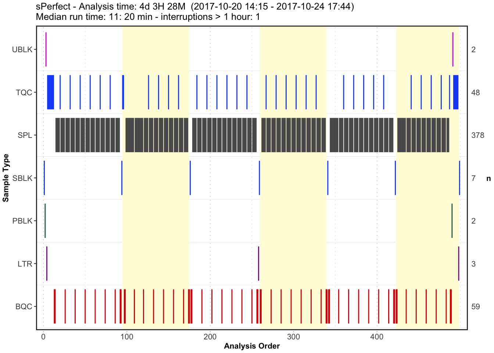
4. Signal trends of Internal Standards
We can look at the internal standards (ISTDs) in all samples across
all six batches to see how the analyses went. The same ISTD amount was
spiked into each sample (except SBLK) so we should expect
the same intensities in all samples and sample types.
Exercises
What do you observe? You can set
output_pdf = TRUEto save the plots as PDF (see subfolderoutput).
plot_runscatter(
data = myexp,
variable = "intensity",
qc_types = c("BQC", "TQC", "SPL", "PBLK", "SBLK"),
analysis_order_range = NA, #get_batch_boundaries(myexp, c(1,6)),
include_feature_filter = "ISTD",
exclude_feature_filter = "Hex|282",
cap_outliers = TRUE,
log_scale = FALSE,
show_batches = TRUE,base_font_size = 5,
output_pdf = FALSE,
path = "./output/runscatter_istd.pdf",
cols_page = 4, rows_page = 3
)
#> Generating plots (3 pages)...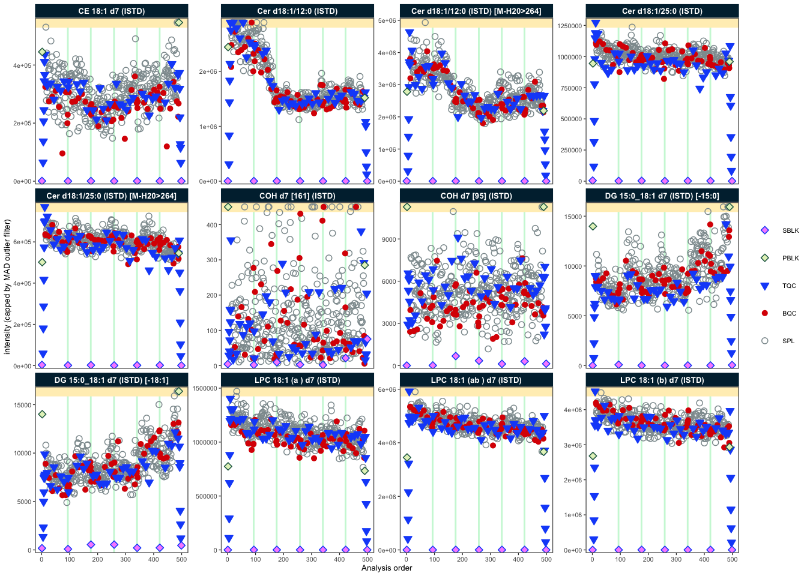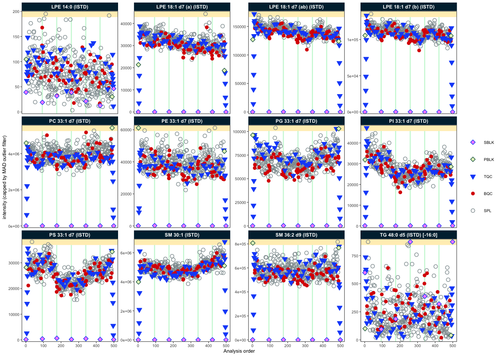
#> - done!5. Adding detailed metadata
To proceed with further processing, we require additional metadata
describing the samples and features. The
MiDAR Excel template provides a solution for the
collection, organisation and pre-validation of analysis metadata. Import
metadata from this template using the function below. If there are
errors in the metadata (e.g. duplicate or missing ID), the import will
fail with an error message and summary of the errors. If the metadata is
error-free, a summary of warnings and notes about the metadata will be
shown in a table, if present. Check your metadata by working through
these warnings, or proceed using
ignore_warnings = TRUE.
Exercises
Open the
XLSMfile in thedatafolder to explore the metadata structure (click ‘Disable Macros’).
file_path <- "datasets/sPerfect_Metadata.xlsm"
myexp <- import_metadata_msorganizer(myexp, path = file_path, ignore_warnings = TRUE)
#> ! Metadata has following warnings and notifications:
#> --------------------------------------------------------------------------------------------
#> Type Table Column Issue Count
#> 1 W* Analyses analysis_id Analyses not in analysis data 15
#> 2 W* Features feature_id Feature(s) not in analysis data 4
#> 3 W* Features feature_id Feature(s) without metadata 1
#> 4 W* ISTDs quant_istd_feature_id Internal standard(s) not used 1
#> --------------------------------------------------------------------------------------------
#> E = Error, W = Warning, W* = Supressed Warning, N = Note
#> --------------------------------------------------------------------------------------------
#> ✔ Analysis metadata associated with 499 analyses.
#> ✔ Feature metadata associated with 502 features.
#> ✔ Internal Standard metadata associated with 17 ISTDs.
#> ✔ Response curve metadata associated with 12 annotated analyses.
myexp <- set_analysis_order(myexp, order_by = "timestamp")
#> ✔ Analysis order set to "timestamp"
myexp <- set_intensity_var(myexp, variable_name = "area")
#> ✔ Default feature intensity variable set to "feature_area"6. Overall trends and possible outlier
To examine overall technical trends and issues affecting the majority of analytes (features), the RLA (Relative Log Abundance) plot is a useful tool (De Livera et al., Analytical Chemistry, 2015). In this plot, all features are normalised (by across or within-batch medians) and plotted as a boxplot per sample. This plot can help to identify potential pipetting errors, sample spillage, injection volume changes or instrument sensitivity changes.
Exercises
First, run the code below as it is. What observations can be made? Then, examine batch 6, by uncommenting the line
#plot_range_indices =. What do you see in this batch? Identify the potential outlier sample by settingx_axis_variable = "analysis_id". Next, set the y-axis limits manuallyy_lim = c(-2,2)and display all analyses/batches again to inspect the data for other trends or fluctuations.
midar::plot_rla_boxplot(
data = myexp,
rla_type_batch = c("within"),
variable = "intensity",
qc_types = c("BQC", "SPL", "RQC", "TQC", "PBLK"),
filter_data = FALSE,
#plot_range_indices = get_batch_boundaries(myexp, batch_ids = c(6,6)),
#y_lim = c(-3,3),
show_timestamp = FALSE,
ignore_outliers = FALSE, x_gridlines = FALSE,
batch_zebra_stripe = FALSE,
linewidth = 0.1
)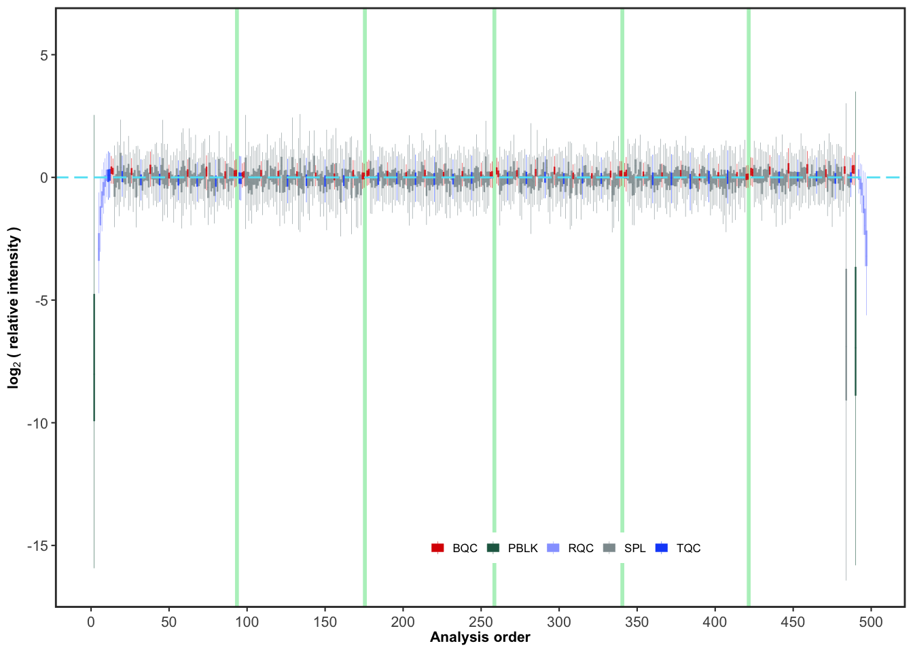
7. PCA plot of all QC types
A principal component analysis (PCA) plot provides an alternative method for obtaining an overview of the study and quality control (QC) samples, as well as for identifying potential issues, such as batch effects, technical outliers, and differences between the sample types.
Exercises
Add blanks and sample dilutions to the plot, by including
"PBLK", "RQC"toqc_types =below. What do you think the resulting PCA plot suggests now?
plot_pca(
data = myexp,
variable = "feature_intensity",
filter_data = FALSE,
pca_dim = c(1,2),
labels_threshold_mad = 3,
qc_types = c("SPL", "BQC", "TQC"),
log_transform = TRUE,
point_size = 2, point_alpha = 0.7, font_base_size = 8, ellipse_alpha = 0.3,
include_istd = FALSE)
#> ! 2 features contained missing or non-numeric values and were exluded.
#> ℹ The PCA was calculated based on `feature_intensity` values of 423 features.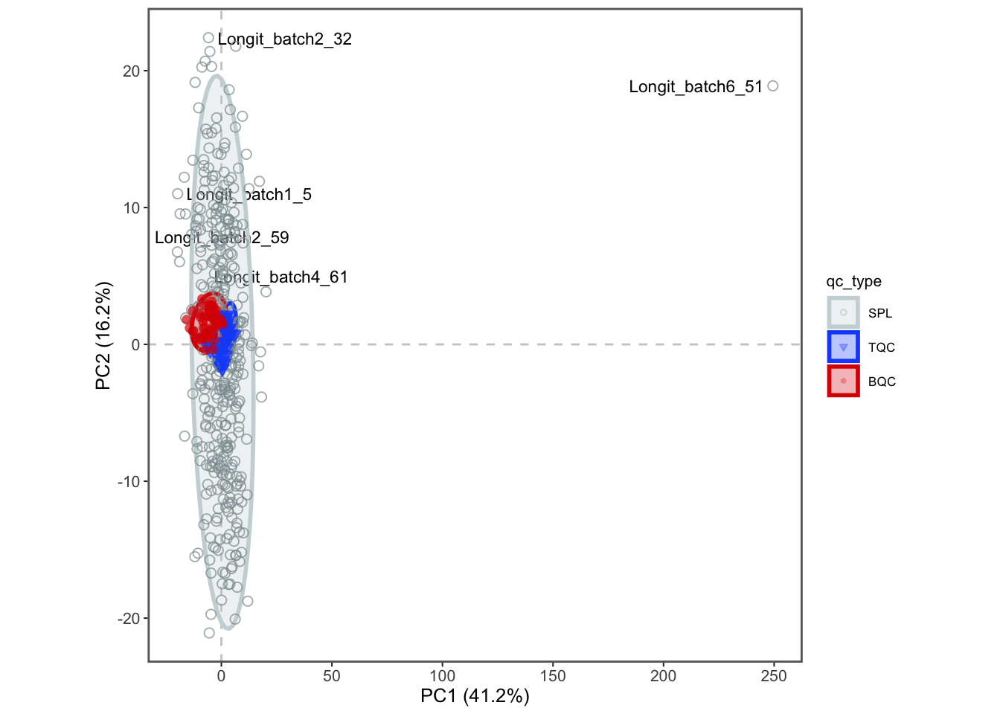
8. Exclude technical outliers
Based on the above RLA and PCA plots, we flagged a technical outlier
and decided to remove it from all downstream processing via the function
exclude().
Exercises
What do we now see in the new PCA plot? Explore also different PCA dimensions (by modifying
pca_dim).
# Exclude the sample from the processing
myexp <- exclude_analyses(myexp, analyses = c("Longit_batch6_51"), clear_existing = TRUE)
#> ℹ 1 analyses were excluded for downstream processing. Please reprocess data.
# Replot the PCA
plot_pca(
data = myexp,
variable = "intensity",
filter_data = FALSE,
pca_dim = c(1,2),
labels_threshold_mad = 3,
qc_types = c("SPL", "BQC", "TQC"),
log_transform = TRUE,
point_size = 2, point_alpha = 0.7, font_base_size = 8, ellipse_alpha = 0.3,
include_istd = FALSE,
shared_labeltext_hide = NA)
#> ! 2 features contained missing or non-numeric values and were exluded.
#> ℹ The PCA was calculated based on `feature_intensity` values of 423 features.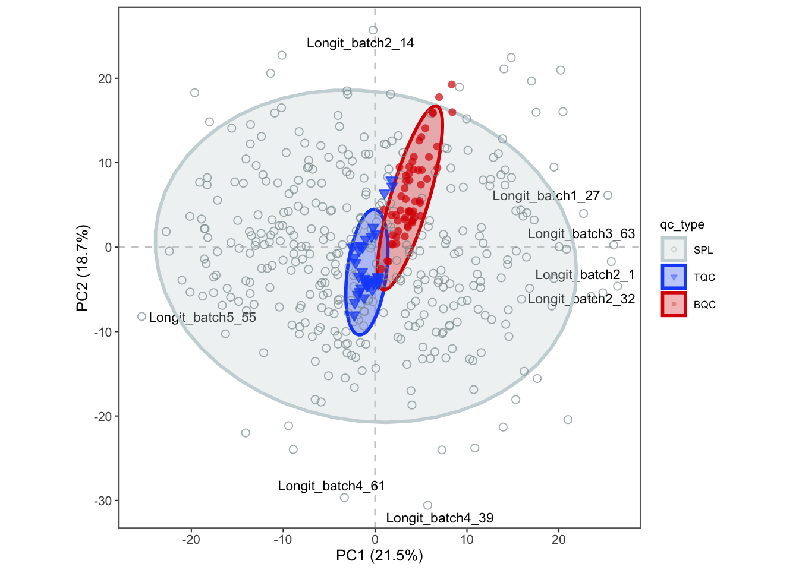
9. Response curves
A linear response in quantification is a prerequisite for to compared differences in analyte concentrations between samples. Given the considerable dynamic range of plasma lipid species abundances and the fact that the class-specific ISTD is spiked at a single concentration, verifying the linear response can be a valuable aspect of the analytical quality assessment. While optimising the injected sample amount is primarily a matter of quality assurance (QA), differences in instrument performance can affect the dynamic range. Therefore, we measured injection volume series at the start and end of this analysis as a QC.
Exercises
Look at the response curves below. What do we see from these results? Change the plotted lipid species by modifying
include_feature_filter(it can use regular expressions). Save a PDF of all lipids by settingoutput_pdf = TRUEand commenting out (add a#in front of)include_feature_filter
# Exclude very low abundant features
myexp <- midar::filter_features_qc(myexp,
include_qualifier = FALSE,
include_istd = TRUE,
min.intensity.median.spl = 200)
#> Calculating feature QC metrics - please wait...
#> ✔ New feature QC filters were defined: 437 of 448 quantifier features meet QC criteria (including the 25 quantifier ISTD features).
#Plot the curves
plot_responsecurves(
data = myexp,
variable = "intensity",
filter_data = TRUE,
include_feature_filter = "^PC 3[0-5]", # here we use regular expressions
output_pdf = FALSE, path = "response-curves.pdf",
cols_page = 5, rows_page = 4,
)
#> Registered S3 methods overwritten by 'ggpp':
#> method from
#> heightDetails.titleGrob ggplot2
#> widthDetails.titleGrob ggplot2
#> Generating plots (1 page):
#> | | | 0%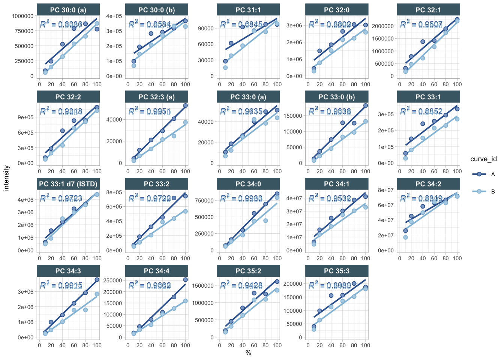
#> | |==============================| 100%
#> - done!10. Isotope interference correction
As demonstrated in the course presentation, there are several instances where the peaks of interest were co-integrated with the interfering isotope peaks of other lipid species. These intereferences can be subtracted from the raw intensities (areas) using the below function, which utilises information from the metadata. The relative abundances for the interfering fragments were obtained using LICAR (https://github.com/SLINGhub/LICAR).
Exercises
Check the sheet “Features (Analytes)” in the metadata file (folder
data). Which species were affected? Which information will you need? Why should we correct for M+3 isotope interference?
myexp <- midar::correct_interferences(myexp)
#> ! Interference correction led to negative or zero values in 2 feature(s) in samples/QCs. Please verify the correction, or set `neg_to_na = TRUE`
#> ✔ Interference-correction has been applied to 10 of the 502 features.11. Normalization and quantification based on ISTDs
The first step is to normalize each lipid species with its corresponding internal standard (ISTD). Subsequently, the concentrations are calculated based on the volume of the spiked-in ISTD solution, the concentration of the ISTDs in this solution, and the sample volume.
Exercises
Visit the metadata template to view the corresponding details. You can also try to re-run e.g. above RLA and PCA plots with
variable = "norm_intensity"orvariable = "conc"to plot the normalized data.
myexp <- midar::normalize_by_istd(myexp)
#> ✔ 460 features normalized with 17 ISTDs in 498 analyses.
myexp <- midar::quantify_by_istd(myexp)
#> ✔ 460 feature concentrations calculated based on 42 ISTDs and sample amounts of 498 analyses.
#> ℹ Concentrations are given in μmol/L.12. Examine the effects of class-wide ISTD normalization
The use of class-specific ISTDs is common practice in lipidomics. However, non-authentic internal standards may elute at different times, which can result in them being subject to different matrix effects and thus different responses compared to the analytes. They may also differ in their fragmentation properties, which can also affect the response. Consequently, the use of non-authentic ISTDs for normalization can lead to the introduction of artefacts, which can manifest as increases in sample variability, rather than the expected reduction. It it therefore important to assess ISTDs during QA in particular, but also as QC, and to consider using alternative ISTDs when observing artefacts. One approach to detecting potential ISTD-related artefacts is to compare the variability of QC and samples before and after normalization.
Exercises
What would you expect from such comarisons of CV? Do you notice potential issues with any of the ISTDs below? What could be possible explanations for such an effect? And what would you do in this situation?
myexp <- midar::filter_features_qc(myexp,
include_qualifier = FALSE,
include_istd = TRUE,
min.intensity.median.spl = 1000)
#> Calculating feature QC metrics - please wait...
#> ✔ New feature QC filters were defined: 413 of 448 quantifier features meet QC criteria (including the 25 quantifier ISTD features).
midar::plot_normalization_qc(
data = myexp,
filter_data = FALSE,
facet_by_class = TRUE,
qc_type = "SPL",
before_norm_var = "intensity",
after_norm_var = "norm_intensity")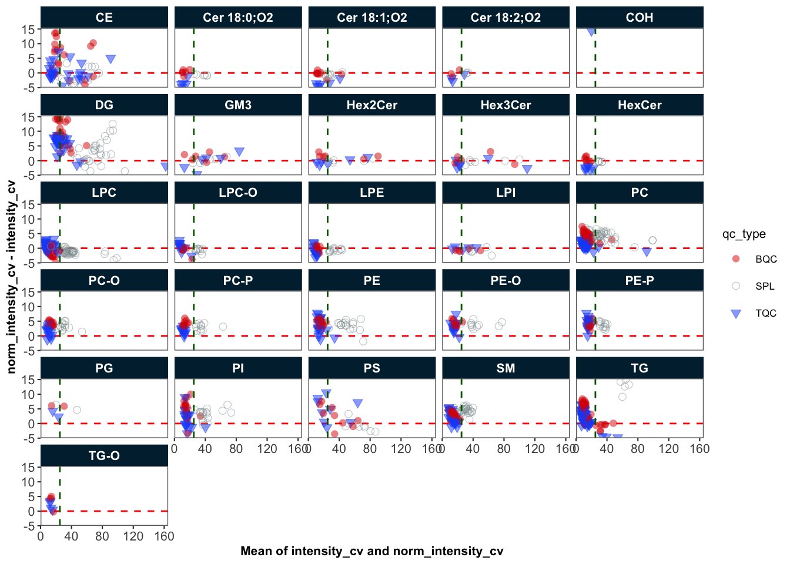
13. Drift correction
We’re going to use a Gaussian kernel smoothing based on the study
sample to correct for any drifts in the concentration data within each
batch. The summary return by the function below isn’t meant as actual
diagnostics of the fit, but rather to understand if the fit caused any
major artefacts. There is also an option to scale along the fit by
setting scale_smooth = TRUE.
myexp <- midar::correct_drift_gaussiankernel(
data = myexp,
ignore_istd = TRUE,
variable = "conc",
ref_qc_types = c("SPL"),
batch_wise = TRUE,
replace_previous = TRUE,
recalc_trend_after = TRUE,
kernel_size = 10,
outlier_filter = FALSE,
outlier_ksd = 5,
location_smooth = TRUE,
scale_smooth = FALSE,
show_progress = FALSE # set to FALSE when rendering
)
#> ℹ Applying `conc` drift correction...
#> ℹ 4 feature(s) contain one or more zero or negative `conc` values. Verify your data or use `log_transform_internal = FALSE`.
#> | | | 0% | |= | 2% | |== | 4% | |=== | 6% | |==== | 8% | |==== | 10% | |===== | 12% | |====== | 14% | |======= | 16% | |======== | 18% | |========= | 20% | |========== | 22% | |=========== | 24% | |============ | 26% | |============ | 28% | |============= | 30% | |============== | 32% | |=============== | 34% | |================ | 37% | |================= | 39% | |================== | 41% | |=================== | 43% | |==================== | 45% | |===================== | 47% | |===================== | 49% | |====================== | 51% | |======================= | 53% | |======================== | 55% | |========================= | 57% | |========================== | 59% | |=========================== | 61% | |============================ | 63% | |============================= | 65% | |============================= | 67% | |============================== | 69% | |=============================== | 71% | |================================ | 73% | |================================= | 75% | |================================== | 77% | |=================================== | 79% | |==================================== | 81% | |===================================== | 83% | |===================================== | 85% | |====================================== | 87% | |======================================= | 89% | |======================================== | 91% | |========================================= | 93% | |========================================== | 95% | |=========================================== | 97% | |============================================| 99% | |============================================| 100% - trend smoothing done!
#> | | | 0% | |= | 2% | |== | 4% | |=== | 6% | |==== | 8% | |==== | 10% | |===== | 12% | |====== | 14% | |======= | 16% | |======== | 18% | |========= | 20% | |========== | 22% | |=========== | 24% | |============ | 26% | |============ | 28% | |============= | 30% | |============== | 32% | |=============== | 34% | |================ | 37% | |================= | 39% | |================== | 41% | |=================== | 43% | |==================== | 45% | |===================== | 47% | |===================== | 49% | |====================== | 51% | |======================= | 53% | |======================== | 55% | |========================= | 57% | |========================== | 59% | |=========================== | 61% | |============================ | 63% | |============================= | 65% | |============================= | 67% | |============================== | 69% | |=============================== | 71% | |================================ | 73% | |================================= | 75% | |================================== | 77% | |=================================== | 79% | |==================================== | 81% | |===================================== | 83% | |===================================== | 85% | |====================================== | 87% | |======================================= | 89% | |======================================== | 91% | |========================================= | 93% | |========================================== | 95% | |=========================================== | 97% | |============================================| 99% | |============================================| 100% - trend recalc done!
#> ! 1 features showed no variation in the study sample's original values across analyses.
#> ! 1 features have invalid values after smoothing. NA will be be returned for all values of these faetures. Set `use_original_if_fail = FALSE to return orginal values..
#> ✔ Drift correction was applied to 459 of 460 features (batch-wise).
#> ℹ The median CV change of all features in study samples was -1.00% (range: -12.53% to 2.59%). The median absolute CV of all features across batches decreased from 39.00% to 37.71%.In order to demonstrate the correction, we will plot an example (PC 40:8) before and after the drift and batch correction. As we will be using the same plot on several occasions, we create a simple function that wraps the plot with many parameters preset.
# Define a wrapper function
my_trend_plot <- function(variable, feature){
plot_runscatter(
data = myexp,
variable = variable,
qc_types = c("BQC", "TQC", "SPL"),
include_feature_filter = feature,
exclude_feature_filter = "ISTD",
cap_outliers = TRUE,
log_scale = FALSE,
show_trend = TRUE,
output_pdf = FALSE,
path = "./output/runscatter_PC408_beforecorr.pdf",
cols_page = 1, rows_page = 1,
)
}Exercises
Let’s use this before defined function to plot the trends of one selected example before and after within-batch smoothing. What may have caused such a drift in the raw concentrations? Do the QC samples follow the trend of the sample? Look also at other lipid species.
Try changing
batch_wise = FALSEin the code chunk above withcorrect_drift_gaussiankernel()to run the run the smoothing across all batches. Would this be a valid alternative? NOTE: don’t forget to change back tobatch_wise = TRUEafter the test.
my_trend_plot("conc_before", "PC 40:8")
#> Generating plots (1 page)...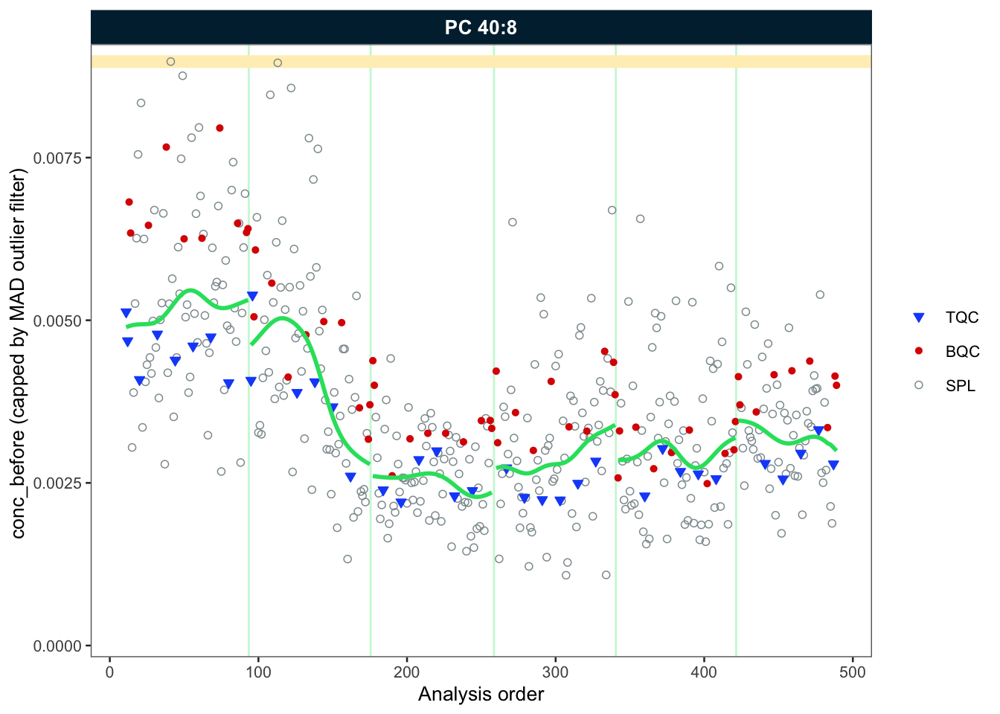
#> - done!
my_trend_plot("conc", "PC 40:8")
#> Generating plots (1 page)...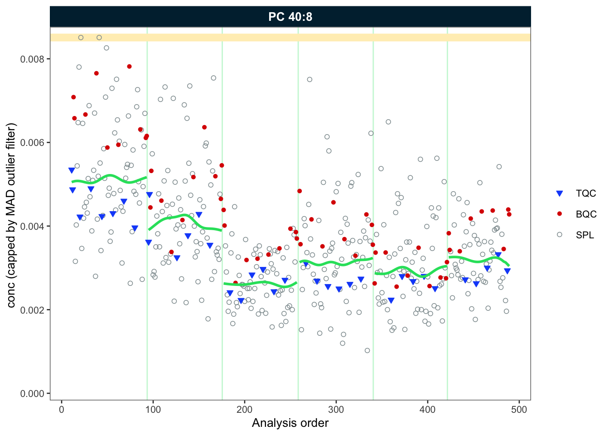
#> - done!14. Batch-effect correction
As we observed, the trend lines of the different batches are not
aligned. We will use correct_batcheffects() to correct for
median center (location) and scale differences between the batches. The
define that the correction should be based on the study samples medians.
An optional scale correction can be performed by setting
correct_scale = FALSE. After the correction we directly
plot our example lipid species again.
Exercises
Change the sample type to
qc_type = "BQC"to use the BQC to center the batches. What do you observe?
myexp <- midar::correct_batch_centering(
myexp,
variable = "conc",
ref_qc_types = "SPL",
replace_previous = TRUE,
correct_location = TRUE,
correct_scale = TRUE,
log_transform_internal = TRUE)
#> ℹ Adding batch correction on top of `conc` drift-correction.
#> ✔ Batch median-centering of 6 batches was applied to drift-corrected concentrations of all 460 features.
#> ℹ The median CV change of all features in study samples was -0.29% (range: -31.80% to 69.10%). The median absolute CV of all features increased from 39.12% to 39.44%.
my_trend_plot("conc", "PC 40:8")
#> Generating plots (1 page)...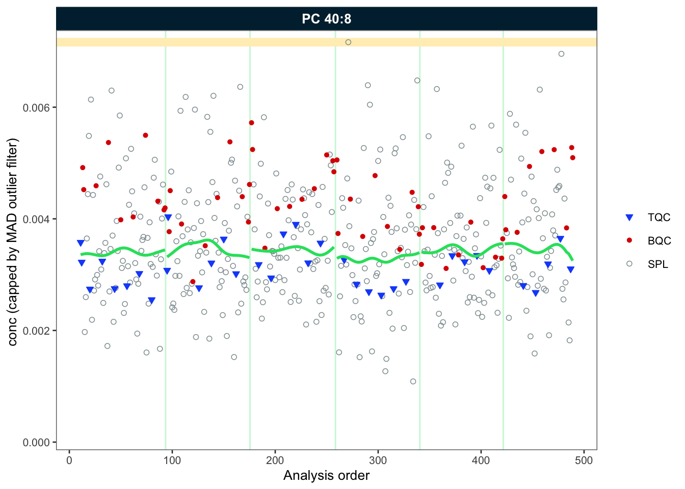
#> - done!15. Saving runscatter plots of all features as PDF
For additional inspection and documentation, we can save plots for
all or a selected subset of species. It is often preferable to exclude
blanks, as they can exhibit random concentrations when signals of
features and internal standards are in close proximity or below the
limit of detection. The corresponding PDF can be accessed within the
output subfolder. Use filt_ arguments to
include or exclude specific analytes. The filter can use regular
expressions (regex). (Hint: try using ChatGPT to generate more complex
regex-based filters).
Exercises
Explore the effect of setting cap_outliers to
TRUEor FALSE. Run ?runscatter in
the console or press F2 on the function name to see all
available options for plot_runscatter().
plot_runscatter(
data = myexp,
variable = "conc",
qc_types = c("BQC", "TQC", "SPL"),
include_feature_filter = NA,
exclude_feature_filter = "ISTD",
cap_outliers = TRUE,
log_scale = FALSE,
show_trend = TRUE,
output_pdf = TRUE,
path = "./output/runscatter_after-drift-batch-correction.pdf",
cols_page = 2,
rows_page = 2,
show_progress = TRUE
)16. QC-based feature filtering
Finally, we apply a set of filters to exclude features that don’t
meet specific QC criteria. The available criteria can be seen by
pressing TAB after the first open bracket of
filter_features_qc() function, or by to viewing the help
page. by running ?filter_features_qc in the console. The
filter function can be applied multiple times, either overwriting or
amending (clear_existing = FALSE) previously set
filters.
Exercises
Explore the effects of the different filtering criteria and filtering thresholds. The plot below in section 17 can be run in order to examine the effects visually.
myexp <- filter_features_qc(
data = myexp,
clear_existing = TRUE,
use_batch_medians = TRUE,
include_qualifier = FALSE,
include_istd = FALSE,
response.curves.selection = c(1,2),
response.curves.summary = "mean",
min.rsquare.response = 0.8,
min.slope.response = 0.75,
max.yintercept.response = 0.5,
min.signalblank.median.spl.pblk = 10,
min.intensity.median.spl = 100,
max.cv.conc.bqc = 25,
features.to.keep = c("CE 20:4", "CE 22:5", "CE 22:6", "CE 16:0", "CE 18:0")
)
#> Calculating feature QC metrics - please wait...
#> ! The following features were forced to be retained despite not meeting filtering criteria: CE 16:0, CE 20:4, CE 22:5, and CE 22:6
#> ✔ New feature QC filters were defined: 324 of 423 quantifier features meet QC criteria (not including the 25 quantifier ISTD features).17. Summary of the QC filtering
The plot below provides an overview of the data quality and the
feature filtering. The segments in green indicate the number of species
that passed all previously defined quality control (QC) filtering
criteria. The rest are the number of species that failed the different
filtering criteria. It should be noted that the criteria are
hierarchically organised; a feature is only classified as failing a
criterion (e.g., CV) when it has passed the hierarchically
lower filters (e.g., S/B and LOD).
Exercises
Are there any differences between lipid classes in terms of their analytical performance? What are the identified QC issues and what are possible explanations for these? What could be the implications if you want to run the next analysis?
midar::plot_qc_summary_byclass(myexp)The following plot provides a further summary of the feature filtering process, indicating the total number of features that have been successfully filtered. As previously stated, the classification is based on the hierarchical application of filters. The Venn diagram on the right illustrates the number of features that have been excluded by a particular filtering criterion.
Exercises
Take a look at the Venn diagram. If a feature shows a bad or non-linear response (e.g. r2 < 0.8), what could be the reasons for this?
midar::plot_qc_summary_overall(myexp)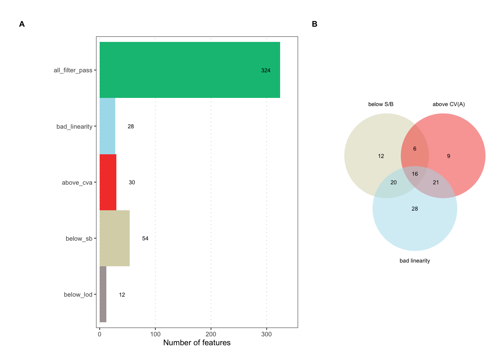
18. Saving a report with data, metadata and processing details
A detailed summary of the data post-processing can be generated in
the form of an formatted Excel workbook comprising multiple
sheets, each containing raw and processed datasets, associated metadata,
feature quality control metrics, and information about the applied
processing steps.
Exercises
Explore the report that was saved in the
outputfolder.
midar::save_report_xlsx(myexp, path = "./output/myexp-midar_report.xlsx")
#> Saving report to disk - please wait...
#> ✔ The data processing report of experiment 'sPerfect' has been saved to './output/myexp-midar_report.xlsx'.You can also save specific data subsets as a clean flat, wide CSV file. This is how we shared the data for the statistical analysis that will be presented in the next part of this workshop!
Exercises
Specify which data to export using function arguments and check the generated CSV files.
midar::save_dataset_csv(
data = myexp,
path = "./output/sperfect_filt_uM.csv",
variable = "conc",
qc_types = "SPL",
include_qualifier = FALSE,
filter_data = TRUE)
#> ✔ Concentration values for 377 analyses and 324 features have been exported to './output/sperfect_filt_uM.csv'.19. Sharing the MidarExperiment dataset
The myexp object can be saved as an RDS
file and shared. RDS files are serialized R
variables/objects that can be opened in R by anyone, even in the absence
of midar package. The imported MidarExperiment
object can also be utilized for re-processing, plotting, or inspection
using the midar package.
Exercises
Save the dataset to the disk and re-open it under a different name. Check the status comparing it with the dataset generated in the workflow above (
mexp)
saveRDS(myexp, file = "./output/myexp-midar.rds", compress = TRUE)
my_saved_exp <- readRDS(file = "./output/myexp-midar.rds")
print(myexp)
#>
#> ── MidarExperiment ─────────────────────────────────────────────────────────────
#> Title: sPerfect
#>
#> Processing status: Drift-Batch-corrected concentrations
#>
#> ── Annotated Raw Data ──
#>
#> • Analyses: 498
#> • Features: 502
#> • Raw signal used for processing: `feature_area`
#>
#> ── Metadata ──
#>
#> • Analyses/samples: ✔
#> • Features/analytes: ✔
#> • Internal standards: ✔
#> • Response curves: ✔
#> • Calibrants/QC concentrations: ✖
#> • Study samples: ✖
#>
#> ── Processing Status ──
#>
#> • Isotope corrected: ✔
#> • ISTD normalized: ✔
#> • ISTD quantitated: ✔
#> • Drift corrected variables: `feature_conc`
#> • Batch corrected variables: `feature_conc`
#> • Feature filtering applied: ✔
#>
#> ── Exclusion of Analyses and Features ──
#>
#> • Analyses manually excluded (`analysis_id`): Longit_batch6_51
#> • Features manually excluded (`feature_id`): ✖